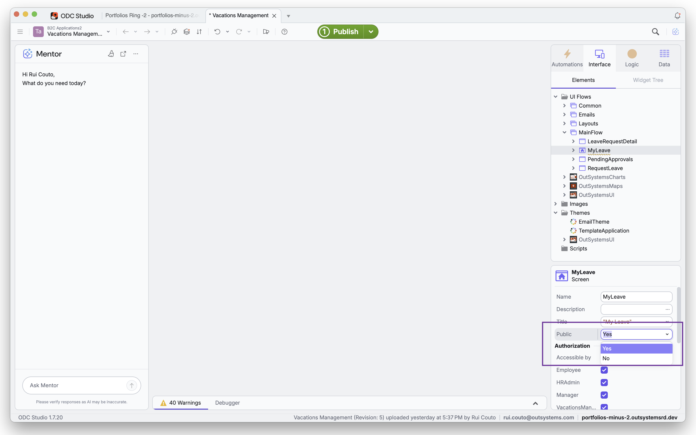
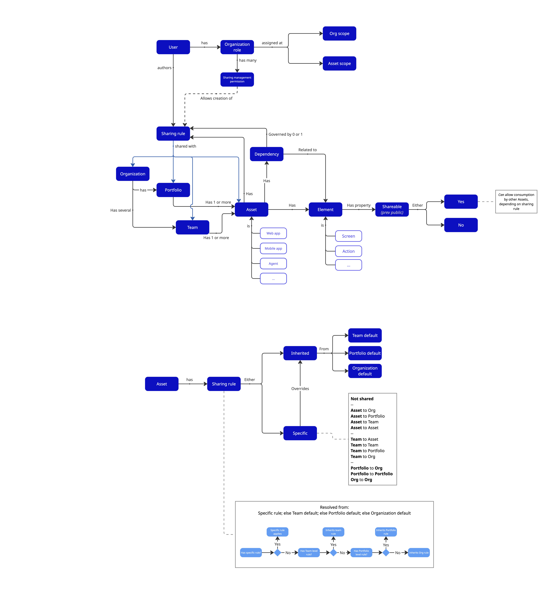
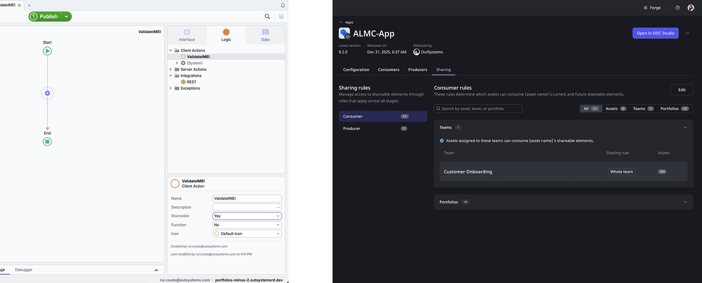
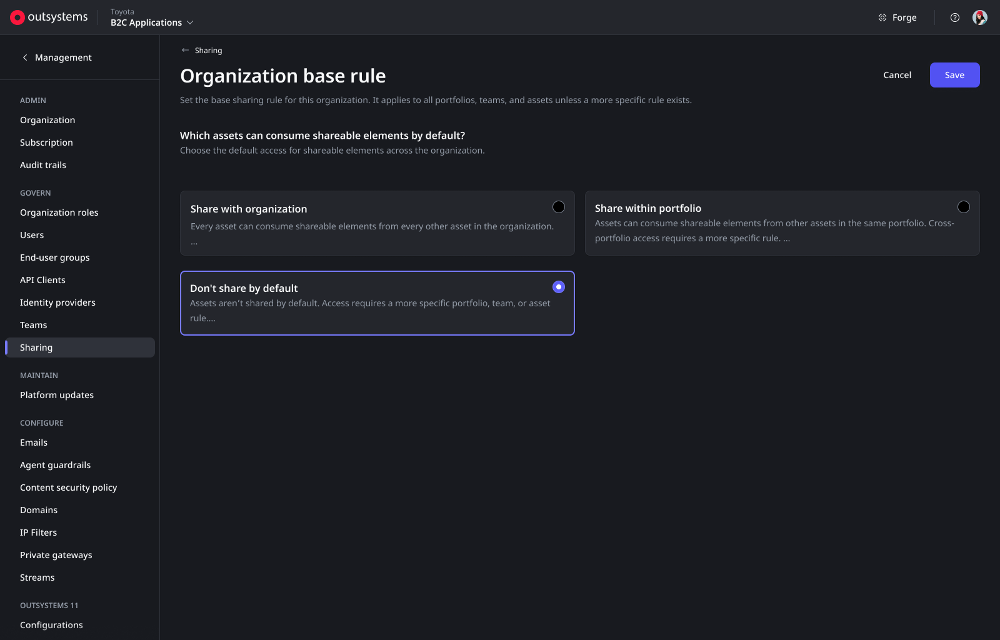
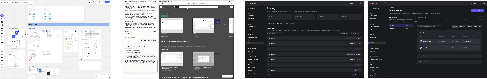

Large enterprise customers have software factories with dozens of apps, which expose thousands of public elements (i.e. elemens such as screens and functions that can be reused across apps). The current OutSystems governance model for public elements is too open for these customers, which often need to have well-defined scopes for consumption of public elements of assets. The current model is binary: either an element is public (and can be consumed by any app in the platform), or private (and can only be consumed by the app that owns it). This model does not allow for the level of control and governance that large enterprise customers require, with the ability of defining scopes for consumption and visiblity of the public elements of assets.

The original ODC model — elements are either public or private to be consumed
This is another change to the product that requires restructing the customer's mental model of the platform. The direct impliction is that sharing is now a two stage process - visibility is defined at the element level, while rules are the governance layer, defined over them. Existing customers not only need to understand the new model, but also have a migration process that couldn't introduce friction or breaking changes.

Conceptual model of the new governance approach
The critical constraint: The new model splits what previously was a single action (sharing an element) into two distinct actions (defining visibility and defining rules). This means that the new model needs to be intuitive and easy to understand, while also being flexible enough to support the needs of large enterprise customers. The new model also needs to be backward compatible with existing customers, ensuring a smooth transition without introducing friction or breaking changes.
Together with the Director PM and Principal Architect and Principal Engineering manager, I defined the new concepts and governance hierarchy for the shared elements.
Baed on the structural model I defined the new user and product needs, namely the configuration of the scopes (organization, portfolios, teams) base rules, plus the cross product impacts on both the visibility and configuration of the assets shared elements.

Cross product impacts, on both Portal and IDE
One of the biggest design challenges was to accomodate the new capability, together with the existing customers. Breaking changes were non-negotiable, but awareness and control in the new capability were key, so that users would never consciously ask: Can I govern public elements?

Impact of the new model on existing workflows
The solution for this challenge was the introduction of flexible base rules at each scope - organization, portfolio, and team - that allows the customer to define the default behavior of the new model, while also allowing for exceptions to be defined at each scope level. At the same time, still supports the current model (all elements open to all assets). This approach supports a smooth transition for existing customers, while also providing the flexibility needed for large enterprise customers, allowing for a gradual adoption of the new model.

Configuration of base rules and visibility over impact
While a one-shot migration would allow for a easier transition, we would risk impacting the business of existing customers. That wasn't an acceptable risk to take.
While we had the extra effort of not only designing the new model, identifying and designing the evolution of the experience, and also design a migration path, we also eliminated the risk of disrupting existing workflows, while supporting progressive adoption of the new model.
The new model was designed, validated and delivered in the form of a conceptual model, use cases, flows, low-fidelity designs and high fidelity designs to the engineering team. The full spectrum of the experience was covered, allowing for a timely deliver of the new product capability. This capability is currenly under development (to be released Q4 2026).

Representative deliverables — Design direction and brainstorming, conceptual model, design